Cloud SQL
Cloud SQL

 Google Developer GroupBangkok · DevFest 2026
Google Developer GroupBangkok · DevFest 2026
Agenda
- 01Choosing a runtimeCloud Run, GKE, or Vertex AI Agent Engine
- 02Persistent sessions & stateCloud SQL, AlloyDB, and Vertex AI sessions
- 03OpenTelemetry & observabilityTraces, logs, and BigQuery analytics
- 04Ship safely at scaleCanaries, tuning, and launch checklist
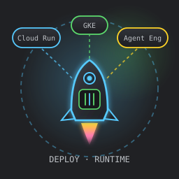
Choosing a
runtime
From local dev to Cloud Run,
GKE, or Agent Engine
From local laptop to production runtime
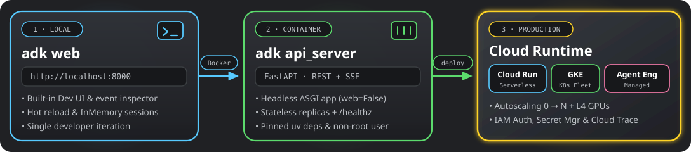
 Ephemeral containers
Ephemeral containersReplicas start, restart, and scale to zero at any time.
Hundreds of overlapping user turns and streaming SSE.
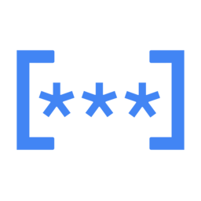
Zero local secretsNo
.env files — use IAM & Secret Manager.adk web is for fast iteration. Production needs stateless compute, durable state, and telemetry.Cloud Run vs GKE vs Vertex AI Agent Engine
| Runtime | Best for | Scaling & GPU | Ops overhead | ADK CLI |
|---|---|---|---|---|
Cloud Run |
Most teams: fast APIs, custom FastAPI, webhooks | 0 → N in seconds, L4 GPU support | Very low (serverless) | adk deploy cloud_run |
 GKE GKE |
Existing K8s platform, custom sidecars, multi-GPU | Full node pools, GPU / TPU slices | Medium–High (cluster ops) | adk deploy gke |
 Vertex AI Agent Engine Vertex AI Agent Engine |
Managed agents + built-in Sessions & Memory Bank | Fully managed autoscaling | Lowest (no container mgmt) | adk deploy agent_engine |
Ship to Cloud Run in one command
# 1. Deploy directly from your agent folder
adk deploy cloud_run \
--project=my-gcp-project \
--region=asia-southeast1 \
--service_name=travel-agent \
--app_name=travel_app \
--trace_to_cloud \
--session_service_uri="postgresql+asyncpg://..." \
./travel_agent
# Add --with_ui ONLY for staging / internal demos
Zero boilerplate
ADK generates theDockerfile, builds via Cloud Build, and deploys to Cloud Run. Skip
Skip --with_ui in prod
Keep the dev UI for staging. In production, expose only the API behind IAM or API Gateway.Flags wire ops
Pass--trace_to_cloud and --session_service_uri right from the CLI.adk deploy cloud_run to bootstrap fast, then eject to a custom FastAPI server when you need middleware.Wrap ADK in your own FastAPI server
import os
from google.adk.cli.fast_api import get_fast_api_app
app = get_fast_api_app(
agents_dir=os.path.dirname(__file__),
session_service_uri=os.environ["DATABASE_URL"],
artifact_service_uri=os.environ["GCS_BUCKET_URI"],
allow_origins=["https://app.example.com"],
trace_to_cloud=True,
web=False, # disable dev UI in production
)
@app.get("/healthz")
async def healthz():
return {"status": "ok"}
 Custom endpoints
Custom endpoints
Add /healthz, Slack/LINE webhooks, or auth middleware on the same ASGI app.Own your Dockerfile
Pin Python & uv dependencies, run non-root, and deploy with your CI/CD pipeline.Lock down CORS
Set explicit allow_origins and verify JWT / Identity-Aware Proxy headers.Self-hosted Gemma on Cloud Run with GPU
CPU-only Cloud Run · calls model via LiteLlm(model="ollama_chat/gemma3")
Cloud Run with --gpu=1 --gpu-type=nvidia-l4 · internal ingress only
Pay per second only while serving inference — no idle GPU clusters.
Keep sensitive prompts inside your VPC & chosen GCP region.
Use Gemma for fast local tasks and Gemini for complex reasoning.
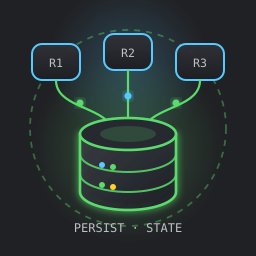
Persistent
sessions & state
Keep memory across restarts
and horizontally scaled replicas
Why InMemorySessionService breaks at scale
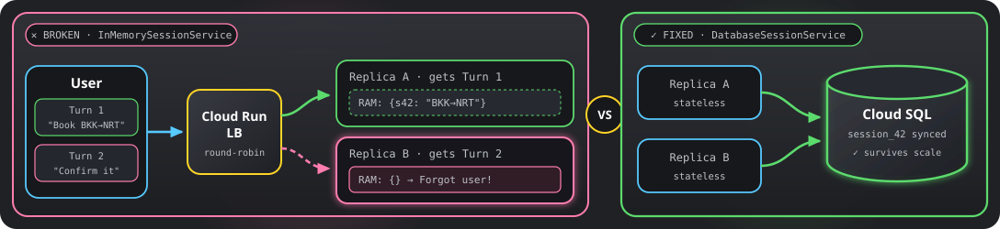
2+ replicas do not share Python process memory.
Every new revision or idle timeout wipes RAM clean.
You cannot replay conversations or debug past turns.
Compare ADK SessionService backends
| Service | Backing store | Multi-replica | Strength | Best fit |
|---|---|---|---|---|
InMemorySessionService |
Python dict (RAM) | No | Zero setup, fastest locally | adk web, unit tests |
DatabaseSessionService |
Cloud SQL / AlloyDB (Postgres, MySQL) | Yes | Full SQL control, VPC private, portable | Cloud Run & GKE apps |
VertexAiSessionService |
Managed Vertex AI Agent Engine | Yes | Zero DB ops + native Memory Bank | Managed AI teams |
SessionService passed to the Runner.Wire Cloud SQL or Vertex AI sessions in code
from google.adk.runners import Runner
from google.adk.sessions import (
DatabaseSessionService,
VertexAiSessionService,
)
from google.adk.artifacts import GcsArtifactService
# Option A: Cloud SQL / AlloyDB (asyncpg)
session_svc = DatabaseSessionService(
db_url="postgresql+asyncpg://app:pwd@/adk"
"?host=/cloudsql/proj:asia-southeast1:adk-db"
)
# Option B: Fully managed Vertex AI Sessions
# session_svc = VertexAiSessionService(
# project="my-gcp-project", location="us-central1"
# )
runner = Runner(
agent=root_agent,
app_name="travel_app",
session_service=session_svc,
artifact_service=GcsArtifactService("my-agent-artifacts"),
)
Built-in Cloud SQL Proxy
Attach --add-cloudsql-instances on Cloud Run to connect over a Unix socket with IAM.Use async drivers
Use postgresql+asyncpg or managed VertexAiSessionService so queries never block FastAPI.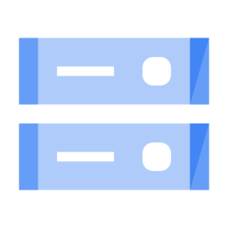
Artifacts in GCSStore PDFs, images, and reports inGcsArtifactService, not in SQL rows.Stateless compute + durable stores & telemetry
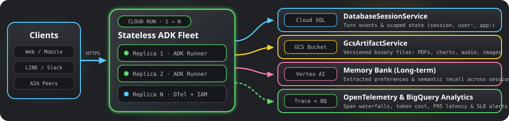
Cloud SQL
Cloud Storage
Vertex AI Memory Bank
OpenTelemetry
 BigQuery
BigQuery
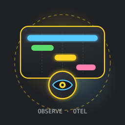
OpenTelemetry &
observability
See every LLM call, tool latency,
token count, and failure
Why standard HTTP logs fail for AI agents
Traditional HTTP access log
POST /run 200 OK 6,420ms user=u_91
Looks healthy, right? But you have no idea why it took 6.4s, which tool retried, how many tokens it burned, or if it hallucinated.
Agent-native observability
- ✓Span tree: every
call_llm&execute_toolstep - ✓Token accounting: input, output & cached tokens
- ✓Decision audit: tool args, retries & handoffs
200 OK can hide 4 LLM calls, 2 failed tools, and a 10x token spike.ADK emits OpenTelemetry spans out of the box
# Option 1: Export straight to Google Cloud Trace
adk deploy cloud_run --trace_to_cloud ./travel_agent
# Option 2: Any OTLP backend (Grafana, Datadog, Arize)
export OTEL_EXPORTER_OTLP_ENDPOINT="https://otlp.example.com"
export OTEL_SERVICE_NAME="travel-agent-prod"
# Privacy guard: strip raw prompt/response text in prod
export ADK_CAPTURE_MESSAGE_CONTENT_IN_SPANS=false
Built into ADK
No manual decorators needed. Every agent run, LLM call, and tool execution creates OTel spans.GenAI conventions
Standard attributes:gen_ai.request.model, gen_ai.usage.input_tokens, gen_ai.tool.name. PII safety switch
PII safety switch
Set ADK_CAPTURE_MESSAGE_CONTENT_IN_SPANS=false when prompts contain customer data.Reading a Cloud Trace span waterfall
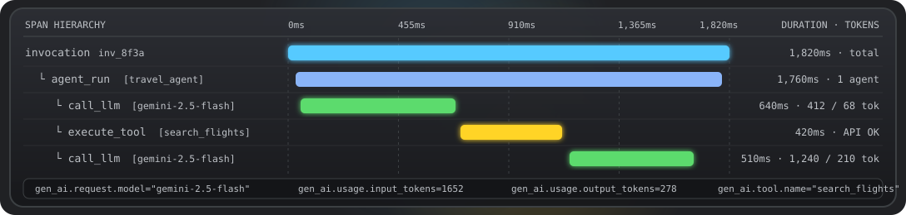
Cloud Trace & Monitoring
 Correlated Trace IDs in Cloud Logging
Correlated Trace IDs in Cloud Logging
640ms LLM → 420ms tool → 510ms LLM) and why input tokens tripled.From single traces to BigQuery Agent Analytics
BigQueryAgentAnalyticsPlugin streams events asynchronously.
Structured JSON logs + partitioned analytics table at scale.
Looker Studio cost dashboards + Cloud Monitoring SLO alerts.
Track spend per agent, model, and tenant.
Split time spent in Gemini vs external tools.
Catch flaky APIs and retry loops early.
Measure blocked prompts and policy hits.
Spot slow tools and token spikes with SQL
SELECT
agent,
event_type,
COUNT(*) AS calls,
APPROX_QUANTILES(latency_ms.total_ms, 100)[OFFSET(95)]
AS p95_ms,
SUM(CAST(JSON_VALUE(content, '$.usage.total_tokens')
AS INT64)) AS total_tokens,
COUNTIF(status = 'ERROR') AS errors
FROM `my_proj.agent_analytics.agent_events`
WHERE timestamp >= TIMESTAMP_SUB(
CURRENT_TIMESTAMP(), INTERVAL 24 HOUR
)
GROUP BY 1, 2
ORDER BY total_tokens DESC;
Cost attribution
Find which agent or tool drives 80% of your monthly Gemini bill.Release diffs
Compare P95 latency and token usage before vs after a prompt change.Eval flywheel
Export real production failures straight into your adk eval test set.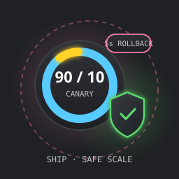
Ship safely
at scale
Canary rollouts, concurrency tuning,
and production readiness
Canary rollouts & instant rollback on Cloud Run
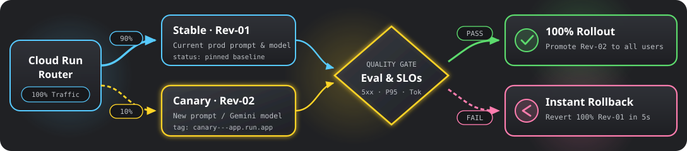
# 1. Deploy v2 with 0% traffic + canary URL
gcloud run deploy travel-agent --image=gcr.io/proj/agent:v2 --no-traffic --tag=canary
# 2. Split 90% Stable / 10% Canary
gcloud run services update-traffic travel-agent --to-revisions=rev-02=10,rev-01=90
# 3. Promote to 100% or instant 5s rollback
gcloud run services update-traffic travel-agent --to-revisions=rev-01=100
Prompts are releases
Treat prompt, tool, and model upgrades like production deploys.5-second rollback
If Cloud Trace or error rate spikes, revert to 100% Rev-01 immediately.Tune Cloud Run for I/O-bound agent workloads
Extend request timeout
Multi-step tool loops and SSE streams often exceed default timeouts. Give complex agents 180–300s.
Leverage async I/O
Agents spend 90%+ of time waiting on Gemini & tool APIs. Async Python handles dozens of turns per container.
Kill cold starts & cap blast radius
Keep 1 warm instance for snappy chat; cap max instances to protect downstream APIs and token budgets.
Keep CPU for background exporters
Prevents Cloud Run from freezing OpenTelemetry batch exporters or async analytics flushes after a reply.
max_instances × SQL pool_size < Cloud SQL max_connections before load testing.Production readiness checklist
- ✓Secrets in Secret Manager. Mount via Cloud Run env/volumes, never bake into images.
- ✓Least-privilege IAM. Dedicated service account with only Vertex AI, Cloud SQL & Trace roles.
- ✓Persistent state & artifacts.
DatabaseSessionService+GcsArtifactService. - ✓Telemetry + PII guard.
--trace_to_cloud, BigQuery plugin, content capture off.
- ✓Guardrails & rate limits. Enforce token budgets and tool caps via ADK Plugins.
- ✓SLO alerts wired. Cloud Monitoring alerts on 5xx rate, P95 latency, and daily token burn.
- ✓Eval gate in CI/CD. Run
adk evalon golden cases before promoting canary to 100%. - !Harden public APIs. Disable
--with_ui, lock CORS origins, and require auth.
Deploy, Persist, Observe
1 · Deploy
Ship fast with Cloud Run (adk deploy cloud_run), add GPUs for Gemma, or use Agent Engine.
2 · Persist
Keep containers stateless. Store sessions in Cloud SQL or Vertex AI, and files in GCS.
3 · Observe
Turn on OpenTelemetry, debug spans in Cloud Trace, and track cost & quality in BigQuery.
--trace_to_cloud and inspect your first waterfall in Cloud Trace.Docs & hands-on codelabs
Deploy ADK agents
adk.dev/deploy/Observability & tracing
adk.dev/observability/Sessions, state & memory
adk.dev/sessions/Codelab: Deploy, Manage & Observe
ADK Agent on Cloud RunCodelab: ADK on Cloud Run GPU
Deploy ADK + Gemma with GPUVertex AI Agent Engine
cloud.google.com/vertex-ai/agent-engineThank you
Q & A
Punsiri Boonyakiat
Google Developer Expert in Cloud AI
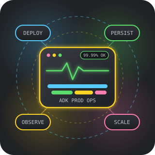